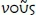

Part I Science of Logic
Preliminary conception
§19
Logic is the science of the pure idea, i.e. the idea in the abstract element of thinking.
Addition 1. The first question is, what is the object of our science? The simplest and most intelligible answer to this question is that the truth is its object. Truth is a grand word and an even grander thing. If someone's spirit and mind are still healthy, his heart must leap at once at the thought of this word. But then the 'but' immediately surfaces, namely whether we are capable of knowing the truth. An incommensurability seems to obtain between us as imperfect humans and the truth as it exists in and for itself, and the question arises as to the bridge between the finite and the infinite. God is the truth; how are we to know him? The virtues of humility and modesty seem to conflict with such an undertaking. – However, one also asks whether the truth can be known, merely to find a justification for trudging on in the banality of one's finite ends. Such humility is not worth much. Such language as 'How am I, a poor earthly worm, to know the truth?' is a thing of the past. Its place has been taken by arrogance and smugness, and some have fancied themselves to be immediately in possession of the truth. – Our youth has been persuaded that they possess the truth (in religious and ethical matters) without further ado. In particular, it has been said in this context that all adults are wooden and fossilized and immersed in untruth. The dawn has appeared to the young people, so they say, but the older world is stuck in the muddle and morass of the everyday. In this context, the special sciences have been designated something that must indeed be acquired, but only as a means for the external purposes of life. Here, then, it is not modesty that holds off from knowledge and from the study of the truth, but instead the conviction that one already possesses the truth in and for itself. The older generation does indeed pin its hopes on the young, for it is they who are supposed to keep the world and science advancing. But this hope is conferred upon the young only insofar as they do not remain as they are, but take on the bitter labour of the spirit.
There is yet another brand of modesty about the truth. This is the seeming nobleness [Vornehmheit] towards the truth that we see in Pilate facing Jesus. Pilate asked 'What is the truth?' in the sense of someone finished with everything, for whom nothing is of significance anymore – the sense in which Solomon says 'All is vanity'. – Here, there is nothing left but subjective vanity.
Timidity is a further impediment to knowing the truth. It is easy for the lethargic mind to say that one did not really mean to be serious about philosophizing. One also hears logic lectures, it is true, but this is supposed to leave us as we are. It is believed that if thinking goes beyond the ordinary reach of representations it moves into sinister territory, that one entrusts oneself there to a sea on which one is tossed hither and thither by the waves of thought only to land eventually back again on the sandbank of this temporal finitude that one had left for nothing at all. The results of such views can be seen in the world. People may acquire many skills and grow to be knowledgeable in many ways; one may become an accomplished civil servant and be educated in preparation of whatever one's particular purposes may be. But it is something quite different to educate one's mind for what is loftier and to care about that. We may hope that in our times a demand for something better has dawned on our youth and that they will not be content with the straw of superficial knowledge.
Addition 2. Everyone is in agreement that thinking is the object of logic. Still, one can have a very low and a very high opinion of thinking. Thus, on the one hand, it is said: this is just a thought, meaning by that that the thought is merely subjective, arbitrary and contingent, not the basic matter itself, not what is true and actual. On the other hand, one may also have a very high opinion of thoughts and understand them in such a way that they alone are able to reach the highest truth, the nature of God, and that nothing can be known about God through the senses. It is said that God is spirit and wishes to be worshipped in spirit and in truth. But then we admit that what is felt and what is perceived by the senses is not what is spiritual, and that thinking is instead the innermost part of spirit and that only spirit is able to recognize spirit. Spirit may indeed also assume the form of feeling, as in religion, for instance. But, in general, feeling as such, i.e. the form of feeling, is one thing, while its content is quite another. Feeling as such is generally the form of the sensory dimension [des Sinnlichen], something we share with the rest of the animals. This form may indeed appropriate a concrete content, and yet this content does not properly belong to this form. The form of feeling is the lowest form for a spiritual content. Only in thinking and as thinking is this content, God himself, in its truth. In this sense, then, thought is not just mere thought, but rather the highest and, properly viewed, the only manner in which it is possible to comprehend what is eternal and in and for itself [das an und für sich Seiende].
Just as one can have a high and a low opinion of thinking, so also with the science of thought. Anybody can think, it is believed, without the study of logic, much as one can digest food without having studied physiology. And even if one has studied logic, one thinks just as one did before, perhaps more methodically, but otherwise with little difference, or so it seems. If logic had no other business than to familiarize us with the activity of merely formal thinking, then it would indeed produce nothing one would not have otherwise been doing just as well all along. The earlier logic was in fact reduced to this position. Incidentally, even acquaintance with thinking as a merely subjective activity is honourable and of interest to human beings. By knowing [wissen] who they are and what they are doing, human beings distinguish themselves from animals. – On the other hand, however, as the science of thinking, logic occupies an eminent position, insofar as thought alone is capable of experiencing what is highest, namely the true. So when the science of logic contemplates thinking in its activity and production (for thinking is not an activity devoid of content, since it produces thoughts and the thought), its content is a fortiori the supersensory world, and to occupy oneself with it is to linger in this world. Mathematics deals with the abstractions of number and space, which are, however, still something sensory, albeit something sensory in an abstract sense without existence. Thought takes leave of even this ultimate sensory element and is freely in communion with itself, renouncing internal and external sensoriness, and removing all particular interests and inclinations. Insofar as logic stands on such a ground, we should think of it in a more dignified way than is usually the case.
Addition 3. The need to understand logic in a deeper sense than that of the science of merely formal thinking is prompted by the interest we take in religion, the state, the law and ethical life. In earlier times, people had no misgivings about thinking; they engaged in it spontaneously and with a fresh mind. They thought about God, nature, and the state and were convinced that it is only by means of thought that one is able to know the truth, not by means of the senses or coincidental representations and opinions. But while engaging in thinking in this way it turned out that the highest relationships in life are thereby compromised. Through thinking, the positive state of affairs was deprived of its power. State constitutions became casualties of thought; religion was attacked by thought; firm religious representations, once held to be valid unconditionally on the basis of revelation, were undermined and the old faith was toppled in the minds of many. Thus, for example, the Greek philosophers opposed the old religion and destroyed the representations of it. This is why philosophers were exiled and killed on the grounds that they overthrew religion and the state, which were essentially connected to one another. In this way, thinking made its mark on actuality and had the most awe-inspiring effect. People thus became aware of the power of thinking and started to examine more closely its pretensions. They professed to finding out that it claimed too much and could not achieve what it undertook. Instead of coming to understand the essence of God, nature and spirit and in general the truth, thinking had overthrown the state and religion. Hence, the demand was made that thinking justify its results, and it is the examination of the nature of thinking, and what it is entitled to, that has in large measure constituted the interest of philosophy in more recent times.
§20
Taking up thinking as it presents itself most readily, it appears (α) at first in its usual subjective meaning as one of the spirit's activities or faculties alongside others such as the sensory dimension, intuiting, fantasy etc., desiring, willing and so on. Its product, namely the determinacy or form of thought, is the universal, the abstract in general. Thinking as an activity is thus the active universal and, more precisely, the universal that acts upon itself in so far as its accomplishment, i.e. what it produces, is the universal. Represented as a subject, thinking is a thinking being, and the simple expression for a concretely existing [existierenden] subject that thinks is I.
Addition. When we speak of thinking, it appears initially to be a subjective activity, one of several faculties possessed by us, such as memory, representation, volition, and the like. If thinking were a merely subjective activity and as such the object of logic, this science like any other would have its specific object. It could then appear to be arbitrary to make thinking and not also the will, imagination, and so forth the object of a particular science. That thinking should receive this honour may well be due to the fact that we grant it a certain authority and that we regard it as what is truly human, distinguishing humans from animals. – To become familiar with thinking even as a merely subjective activity is not without interest. Its more specific determinations would be the rules and laws with which one becomes acquainted through experience. Thinking viewed in this way as determined by laws makes up what usually otherwise constituted the content of logic. Aristotle is the founder of this science. He possessed the strength to assign to thinking what belongs to it per se. Our thinking is very concrete, but with respect to its manifold content we need to sort out what belongs to thinking or the abstract form of the activity. The activity of thinking, acting as a subtle spiritual bond, connects all this content. It is this bond, this form itself, which Aristotle highlighted and defined. To this day, the logic of Aristotle represents the logical [sphere], which has merely been made more elaborate, primarily by the Scholastics of the Middle Ages. The Scholastics did not add to the material, but merely developed it further. The work of more recent times with respect to logic consists primarily in omitting many of the logical determinations spun out further by Aristotle and the Scholastics, on the one hand, and in superimposing a lot of psychological material [on the other]. The interest in this science lies with becoming acquainted with the procedures of finite thinking, and the science is correct when it corresponds to its presupposed object. To occupy oneself with this kind of formal logic is no doubt useful. It clears the head, as they say. One learns to concentrate, to abstract, whereas ordinary consciousness deals with sensory representations which crisscross and get entangled. In the act of abstraction, however, the mind is concentrated on a single point and, by this means, the habit is acquired of preoccupying oneself with the interiority [of things]. One can use the familiarity with the forms of finite thinking as a means towards educating oneself in the empirical sciences that proceed in accordance with those forms. In this sense, logic has indeed been called 'instrumental logic'. To be sure, it is possible to assume a more liberal stance and claim that logic is to be studied for its own sake rather than for its usefulness, since excellent things should not be sought out merely for their usefulness. Now in one sense, this is quite correct, but in another that which is excellent is likewise what is most useful, for it is substantive, something that stands fast for itself and is for that reason the bearer of the particular ends which it furthers and brings to fruition. One must not view the particular ends as primary, since that which is excellent promotes them as well. Thus, for example, religion has its absolute value in itself. At the same time, other ends are borne and upheld by it. Christ says: 'Seek ye first the kingdom of God, and all these things shall be added unto you' [Matt. 6:33]. Particular ends can be achieved only through attaining what is in and for itself [das Anundfürsichseiende].
§21
(β) When thinking is taken as active in relation to objects, as thinking over something, the universal that is the product of such an activity contains the value of the basic matter [Sache], the essential, the inner, the true.
Addition. Even children are instructed to think things over. For instance, they are told to connect adjectives with substantives. Here they have to pay attention and differentiate, remember a rule, and adjust the particular case to it. The rule is nothing but a universal, and children are asked to make the particular conform to the universal. – Furthermore, in life we have ends. We think over the ways in which we can achieve them. The end here stands for the universal, the ruling principle, and we have means and instruments whose operation we determine in light of our end. – Thinking things over functions in a similar way in the context of morality. To think things over here means to recall the right thing to do, one's duty, the universal that serves as the fixed rule in accordance with which we are to orient our particular behaviour in the cases at hand. The universal determination ought to be recognizable and inherent in our behaviour. – We find the same thing in our attitude towards the phenomena of nature [Naturerscheinungen] as well. For instance, we take note of thunder and lightning. This phenomenon is familiar to us and we often perceive it. But human beings are not content with mere familiarity, with the mere sensory phenomenon. Rather, they want to get behind it, they want to know [wissen] what it is, they want to comprehend it. Hence, one thinks over and wants to know [wissen] the cause as something distinct from the phenomenon as such, the inner in its distinctness from the mere outer. The phenomenon is accordingly made double, broken apart into the inner and the outer, force and expression, cause and effect. Here, the inner, the force, is again the universal, that which abides, not this or that flash of lightning, this or that plant, but instead that which remains the same in all these things. The sensory is something individual, ephemeral; by thinking it over, we become acquainted with what abides in it. Nature shows us an infinite amount of individual shapes and phenomena. We have a need to introduce unity into this manifoldness. Hence we compare and seek to recognize the universal in each case. Individuals are born and pass away; the genus is what abides in them, what recurs in all of them, and what is present only for [those] thinking them over. The laws belong in this context as well, such as, for example, the laws of motion of the celestial bodies. We see those bodies here today and there tomorrow. This lack of order is something inappropriate for the spirit, something it does not trust, for it believes in order, in a simple, constant, and universal determination. Guided by this belief, spirit has applied its process of thinking things over to the phenomena and has come to know their laws, has laid down the motions of the celestial bodies in a universal manner, so that every change of location can be determined and recognized on the basis of this law. – It is the same with those powers that rule human action in its infinite manifoldness. Here, too, human beings possess that belief in a prevailing universal. – From all these examples, it is to be gathered that the process of thinking things over is always seeking what is fixed, abiding, intrinsically determined, and governing the particular. This universal is not to be grasped with the senses, and it counts as what is essential and true. Thus, for example, duties and rights are the essence of actions and the truth of the latter consists in being in conformity with those universal determinations.
By determining what is universal in this way, we find that it forms the opposite of an other, and this other is the merely immediate, external, and individual over against the mediated, inner, and universal. This universal does not exist concretely as a universal outwardly, i.e. the genus as such cannot be perceived, and the laws of motion of the celestial bodies are not inscribed in the sky. Thus, one does not hear the universal and one does not see it; instead, it is only for the spirit. Religion leads us to a universal that encompasses everything else in itself, an absolute through which everything else has been generated, and this absolute is not for the senses but only for the spirit and for thought.
§22
(γ) Through the process of thinking something over, its content is altered from the way it is in sensation, intuition, or representation initially. Thus, it is only by means of [vermittels] an alteration that the true nature of the object emerges in consciousness.
Addition. The result of thinking something over is a product of our thinking. Thus, for instance, Solon created out of his head the laws that he gave the Athenians. On the other hand, however, we also regard the universal, the laws, as the opposite of something merely subjective and see in it what is essential, true, and objective in things. In order to learn the true nature of things, mere attentiveness is not enough. Rather, our subjective activity has to be involved, reshaping what is immediately on hand. Now at first blush this seems to be quite misguided and contrary to the end at stake in knowing. Nonetheless, it can be said that it has been the conviction of all times that only by reworking the immediate, a reworking produced by thinking things over, is something substantive attained. By contrast, it is primarily in recent times alone that doubts have been raised and the distinction has been maintained between the products of our thinking and things in and of themselves. It has been said that the in-itself of things is something entirely different from what we make of it. The standpoint in defence of this separation has been advocated particularly by the Critical philosophy against the conviction of the whole previous world for which the agreement of the basic matter and thought counted as something settled. The interest of modern philosophy revolves around this opposition. However, it is the natural belief of human beings that this opposition has no truth. In ordinary life we think things over without the added reflection that this is how truth comes about. In the firm belief in thought's agreement with the basic matter, we think without further ado and this belief is of the highest importance. It is the sickness of our time that has led to the desperation that our knowing is merely subjective and that this subjectivity is the last word. And yet, the truth is what is objective and this ought to be the rule for everyone's convictions, such that an individual's conviction is bad if it does not conform to this rule. According to the modern viewpoint, by contrast, conviction as such, i.e. the mere form of being convinced, is already a good thing – whatever the content, since no standard for its truth is on hand. – When we said earlier that it is an old belief of human beings that it is the vocation of the spirit to know [wissen] the truth, it was implied that the objects, the outer and the inner nature, and in general the object [Objekt] as it is in itself, are just the way they are qua thought, and that thinking therefore is the truth of what is objective [die Wahrheit des Gegenständlichen]. The business of philosophy consists merely in bringing explicitly to consciousness what has been valid for humanity since antiquity with respect to thinking. Philosophy thus does not establish anything new. What we have brought out here by means of our reflection is everybody's immediate prejudice already.
§23
(δ) Since in thinking things over their true nature emerges and since this thinking is just as much my activity, that true nature is equally the product of my spirit insofar as the latter is a thinking subject. It is mine in accordance with my simple universality, i.e. as an I that is entirely with itself – it is the product of my freedom.
§24
In accordance with these determinations, thoughts may be called objective thoughts. Also to be reckoned among them are those forms that are initially examined in ordinary logic and are usually taken to be only forms of conscious thought. Logic thus coincides with metaphysics, i.e. the science of things captured in thoughts that have counted as expressing the essentialities of things.
Addition 1. When it is said that thought as objective thought constitutes the core [das Innere] of the world, it may seem as if, by this, consciousness is supposed to be attributed to natural things. We feel a certain resistance to construing the inner activity of things as thinking, since we say that human beings distinguish themselves from all natural things through thinking. We would therefore have to speak of nature as the system of unconscious thoughts, a 'petrified intelligence', as Schelling puts it. Instead of using the expression thoughts, it would thus be better to speak of thought-determinations, in order to avoid any misunderstanding. – In general, from what has been said so far, the logical dimension is to be sought as a system of thought-determinations for which the opposition of the subjective and the objective (in its ordinary sense) falls away. This meaning of thinking and its determinations is expressed more directly by the ancients when they say that  governs the world – or when we say that reason exists in the world and mean by it that reason is the soul of the world, residing in it, immanent in it as its ownmost, innermost nature, its universal. To take a more particular example, when we talk about some specific animal we say that it is an animal. The animal as such cannot be shown, only a specific animal can. The animal does not exist concretely [existiert nicht] but is instead the universal nature of individual animals, and each concretely existing animal is much more concretely specific, something particularized. But to be an animal, i.e. the genus that is the universal, belongs to the specific animal and constitutes its specific essentiality. Take what it is to be an animal away from a dog, and we would be at a loss to say what it is. In general, things have an abiding inner nature as well as an external existence. They live and die, come to be and pass away. The genus is their essentiality, their universality, and it is not to be construed merely as some common feature.
Just as thinking makes up the substance of external things, so it is also the universal substance of all things spiritual. Thinking is inherent in all human intuiting. Similarly, thinking is the universal in all representations, memories, and generally in every spiritual activity, in all willing, wishing, and so forth. The latter are one and all merely further specifications of thinking. When we construe thinking in this way, it appears in a different context from when we merely say that among and alongside other faculties such as perception, representation, willing, and so on we also possess the faculty of thinking. When we consider thinking as the true universal in everything natural and everything spiritual as well, then it extends over all of this and is the foundation of everything. We can use this conception of thinking in its objective sense (as nous) as a starting-point for explaining what thinking means in the subjective sense. To begin with, we say that humans think – and yet at the same time we also say that they perceive, will, etc. Humans think, and to be human is to be something universal. However, they think only insofar as the universal exists for them. The animal, too, is in itself a universal, but the universal does not exist as such for it; it is always only the individual thing that does. The animal sees something individual, e.g. its food, a human being, and so on. All this, however, is merely something individual for it. Similarly, sensation is always involved with individual things alone (this pain, this pleasant taste, and so forth). Nature does not bring nous to consciousness, only humans duplicate themselves in such a way that the universal exists for the universal. This is already the case when a human being knows [weiß] itself as 'I'. When I say 'I', I mean to refer to myself as this individual, indeed as this determinate person. Actually, however, I do not thereby say anything specific about myself. Everybody else is 'I' as well, and although in denoting myself as 'I' I mean myself, this individual being, I simultaneously utter something completely universal. 'I' is pure being-for-itself in which all that is particular has been negated and sublated [aufgehoben]; it is the ultimate, simple, and pure element of consciousness. We can say that 'I' and thought are the same; or more specifically, 'I' is the thinking as someone thinking [das Denken als Denkendes]. What I possess in my consciousness is for me. 'I' is this void, the receptacle for anything and everything, that for which everything exists and which stores everything within itself. Every human being is an entire world of representations buried in the night of the 'I'. The 'I' is thus the universal in which abstraction is made from everything particular, but in which at the same time everything lies shrouded. It is therefore not a merely abstract universality, but a universality that contains everything within itself. We use 'I' at first in a purely trivial way, and only through philosophical reflection does it come to be an object of consideration. In the 'I' we possess the entirely pure thought in its presence. The animal cannot say 'I'; only a human can do so because a human is the thinking. In the 'I' there is inner and outer content of many different kinds, and depending on the make-up of this content, we behave as someone perceiving with the senses, representing, remembering, and so on. In every instance, however, the 'I' is present, or rather, thinking is inherent in all of it. Thus, humans are always thinking, even if they are only perceiving. When they consider something, they always view it as something universal. If they zero in on an individual thing, they pick it out, thereby turning their attention away from something else, and take it as something abstract and universal, even if only as a universal in a formal sense.
Regarding our representations, we have a twofold situation. Either the content is a thought, but the form is not; or, conversely, the form belongs to thought, but the content does not. For instance, when I say 'anger', 'rose', 'hope', then all these things are familiar to me through sensation and feeling but I express this content in a general way, i.e. in the form of thought. I have left out many particulars and rendered only the content as something universal, but the content remains sensory. Conversely, when I form a representation of God, the content is indeed something purely thought, but the form is still sensory in the way in which I find it immediately present in me. In the case of representations, then, the content is not merely sensory, as when I look at things. Instead, the content is sensory while the form belongs to thought or vice versa. In the former case, the matter is given and the form belongs to thinking; in the latter thinking is the source of the content, but by means of the form the content becomes something given that thereby reaches spirit from the outside.
Addition 2. In logic we deal with pure thought or pure thought-determinations. When we think of a thought in the ordinary sense, we always imagine something that is not just a pure thought, for by it we mean a thought whose content is something empirical. In logic, thoughts are considered in such a way that they have no other content than that which belongs to and is generated by thought itself. In this way, the thoughts are pure thoughts. Thus spirit relates purely to itself and is therefore free, for freedom is precisely this: to be at home with oneself in one's other, to be dependent upon oneself, to be the determining factor for oneself. In all my urges I start from something other than myself that is for me something external. Here, then, we speak of dependence. Freedom exists only where there is no other for me that I am not myself. The natural human being who is determined only by his urges is not at home with himself. However self-willed he may be, the content of his willing and believing is still not his own and his freedom is merely a formal one. When I think, I give up my subjective particularity, immerse myself in the basic matter and let thought follow its own course; and I think badly whenever I add something of my own.
If, in keeping with what has been said up to now, we look at logic as a system of pure thought-determinations, then by contrast the other philosophical sciences, the philosophy of nature and the philosophy of spirit, appear as a kind of applied logic, for logic is their animating soul. In this respect, these other sciences are concerned simply with recognizing the logical forms in the formations of nature and of spirit, formations that are merely a particular manner of expression of the forms of pure thinking. For instance, consider syllogism (not, indeed, in the meaning it has in the old, formal logic but in its truth). It is that determination in virtue of which the particular is supposed to be the middle that joins the extremes of the universal and the individual together. This form of syllogistic inference is a universal form of all things. Everything is something particular that joins itself as something universal with the individual. The impotence of nature, however, brings with it an inability to exhibit the logical forms in their purity. The magnet is an example of that sort of impotent exhibition of the syllogism. It joins its poles together in the middle, i.e. in the point of indifference, such that they are immediately one in their distinctness. In physics, too, one becomes familiar with the universal, the essence. The difference is merely that the philosophy of nature makes us aware of the true forms of the concept in natural things. – Logic is thus the all-animating spirit of all the sciences and the thought-determinations of logic are pure spirits. They are what is innermost, and yet at the same time they are the very things we utter all the time and which for that reason seem to be something perfectly familiar. However, what is in this way familiar is usually what is most unfamiliar. Thus, for instance, being is a pure determination of thought. And yet, it never occurs to us to make the 'is' the object of our consideration. We typically believe that the absolute must lie somewhere far yonder. But it is precisely that which is wholly present and which we as thinking beings always carry with us and make use of, even if without explicit consciousness of the fact. Such thought-determinations are deposited first and foremost in language. Hence the instruction in grammar that children receive is useful for drawing their attention to distinctions in thought without their being conscious of it.
It is commonly said that logic deals with forms only and that it must take its content from somewhere else. However, the logical thoughts are not some accessory over against all this content. Rather, all this other content is merely an accessory compared to the logical forms. They are the ground, existing in and for itself, of everything. – A higher level of education is required for directing one's interest at such pure determinations. The contemplation, in and for itself, of these determinations has, in addition, the sense that we derive these determinations from thinking itself and, on the basis of them, see whether they are true determinations. We do not pick them up in some external fashion and then define them or demonstrate their value and their validity by comparing them to the way in which they happen to surface in our consciousness. That would mean that we start from observation and experience and then say, for instance, that we typically use 'force' for this and that. We then call a definition of this kind correct, if it agrees with what we usually find in our ordinary consciousness of its object.
However, in such a way a concept is not being determined as it is in and for itself, but determined in accordance with a presupposition that thus constitutes the criterion, the standard of correctness. And yet, we do not have to use such a standard but instead let these determinations, alive in themselves, count for themselves. The question concerning the truth of the thought-determinations must appear strange to ordinary consciousness for, after all, they seem to obtain their truth only from being applied to given objects. Consequently, it would make no sense to inquire about their truth independently of such an application. This, however, is exactly the point at issue. To be sure, one must first know [wissen] what is to be understood by truth here. Usually we call truth the agreement of an object with our representation of it. Thus we have an object as a presupposition, and our representation is supposed to conform to it. – In the philosophical sense, by contrast, truth means in general the agreement of a content with itself, to put it abstractly. Consequently, this is a meaning of truth entirely different from the one just mentioned. Incidentally, the deeper (i.e. philosophical) meaning of truth can already be found to some extent in the ordinary use of language. Thus, for instance, we speak of a true friend and mean by that someone whose way of acting conforms to the concept of friendship. Similarly, we speak of a true work of art. Untrue then means as much as bad, something in itself inadequate. In this sense, a bad state is an untrue state, and what is bad and untrue generally consists in the contradiction that obtains between the determination or the concept and the concrete existence of the object. We can form a correct representation of such a bad object but the content of this representation is something intrinsically untrue. We may have in our heads many instances of correctness of this sort that are simultaneously untruths. – God alone is the true agreement of the concept with reality.
But all finite things have an untruth: they possess a concept and a concrete existence that is, however, inadequate to the concept. For this reason, they must perish, and by this means the inadequacy of their concept and their concrete existence is manifested. As an individual thing, the animal possesses its concept in its genus, and the genus frees itself from the individuality by means of death.
Truth considered in the sense here explained, namely as the agreement with itself, constitutes the proper concern of logic. In ordinary consciousness, the question regarding the truth of thought-determinations does not even arise. The business of logic can also be expressed by saying that in it thought-determinations are considered in terms of their ability to capture what is true [das Wahre]. The question thus aims at finding out which are the forms of the infinite and which of the finite. In ordinary consciousness, we do not lose sleep over finite thought-determinations and we let them count as valid without further ado. All deception, however, is due to thinking and acting in accordance with finite determinations.
Addition 3. What is true can be known [erkennen] in different ways, and the ways of knowing are to be considered merely as forms of doing this. Thus one may indeed come to know what is true through experience, but experience is only one of the forms. In the case of experience, it depends on the sensitivity [Sinn] with which one approaches actuality. Someone with a great sensitivity has great experiences and catches sight of what matters in the colourful play of appearances. The idea is on hand and actual, it is not something yonder and far away. For example, a great sensitivity such as that of Goethe, when looking at nature or history, has great experiences of them, perceiving what is due to reason and putting it into words. Again, what is true may also be known through reflection, in which case it is determined by relations between thoughts. However, in these two ways what is true in and for itself does not yet exist in its proper form. The most perfect form of knowing is that in the pure form of thinking. Here a human being behaves in a thoroughly free manner. That the form of thinking is the absolute form and that the truth appears in it as it is in and for itself, this is the claim of philosophy in general. The proof for this first of all requires showing that those other forms of knowing are finite forms. The high scepticism of antiquity accomplished this with its demonstration that all these forms contain a contradiction within themselves. While this scepticism also approaches the forms of reason, it does so by first imputing to them something finite in order to get hold of them. In the course of the logical development [on the following pages], each and every form of finite thought will come up and, indeed, as they step forward according to the necessity [of that development]. Here (i.e. in the introduction) they would have to be taken up initially in an unscientific manner as something given. In the logical treatment itself not only the negative side of these forms is shown, but their positive side as well.
When one compares the different forms of knowing [Erkennen] with one another it can easily look as if the first of them, namely that of immediate knowledge [Wissen], were the most adequate, most beautiful, and highest. Everything called innocence in a moral respect falls into this form of thinking as do then religious feeling, naïve trust, love, loyalty, and natural faith. The two other forms, first that of reflective knowing and then also of philosophical knowing, abandon this immediate natural unity. Insofar as they have this in common with one another, their manner of intending to grasp what is true, namely, through thinking, can easily seem to be a matter of human pride intent on knowing by one's own might [Kraft] what is true. As a standpoint of universal separation [where humans separate themselves from everything], this standpoint can indeed be regarded as the origin of all evil and malice, as the original sacrilege. It may then well appear as if thought and knowing are to be given up in order to manage to return [to a unity] and arrive at a reconciliation. As far as leaving behind the natural unity is concerned, this wondrous division of the spiritual within itself has been an object of consciousness for peoples from ancient times. In nature, such internal division does not take place and things in nature do nothing evil. An old representation of the origin and the consequences of that division was given to us in the Mosaic myth of the Fall [Sündenfall, i.e. the original sin]. The subject matter of this myth forms the basis of an essential piece of religious doctrine, namely the doctrine of the natural sinfulness of human beings and the necessity of a help against it. It seems appropriate to examine the myth of the Fall at the beginning of the Logic, since the latter has to do with knowing, while this myth deals with knowing and its origin and significance, as well. Philosophy must not shy away from religion, and it must not behave as if it had to be content if religion merely tolerates it. On the other hand, likewise the view that myths and religious narratives such as these are old-fashioned is to be rejected. After all, for thousands of years they have been venerated among peoples.
If we now look at the myth of the Fall more closely, we find expressed here the general relation of knowing to spiritual life, as was mentioned earlier. In its immediacy, spiritual life first appears as innocence and naïve trust. However, it is part of the essence of spirit that this immediate state be sublated, for the spiritual life distinguishes itself from the natural life and, more specifically, from the animal life, by not remaining in the state of being in itself but instead by being for itself. Hence, the standpoint of division must equally be sublated, and spirit should return to oneness [Einigkeit] by its own means. This oneness is a spiritual oneness, and the principle that leads back to it [das Prinzip der Zurückführung] exists in thinking itself. It is thinking that causes the wound and heals it, too. – Now in our myth it is said that Adam and Eve, the first human beings (the human being in general), found themselves in a garden in which there existed a tree of life and a tree of the knowledge [Erkenntnis] of good and evil. It is said that God had forbidden them to eat from the fruit of the latter tree. There is no further mention of the tree of life at this point. By this means, it is declared that human beings are not supposed to come to know but instead that they are supposed to remain in a state of innocence. Likewise, in other peoples who possess a deeper consciousness we find the first state of the human being represented as a state of innocence and oneness. This much is correct about such a view: we find everything human in a state of division from the outset but this division cannot indeed be the end of the matter. However, it is incorrect that the immediate, natural unity is the right one. Spirit is not merely something immediate; rather it contains the moment of mediation essentially within itself. Childlike innocence does indeed possess something attractive and touching, but only insofar as it reminds us of what is supposed to be brought about by spirit. That natural oneness that we witness in children is supposed to be the result of the work and education of the spirit. – Christ says: 'Unless you become like children…', etc. [Matt. 18:2–4]. This does not mean, however, that we should remain children. – Now in our Mosaic myth we find, furthermore, that the occasion for stepping out of the unity came to the human being through instigation from the outside (through the serpent). In fact, however, the act of entering into the opposition, i.e. the awakening of consciousness, is intrinsic to human beings themselves; it is a history that repeats itself with every human being. The serpent attributes godliness to knowing [wissen] what is good and evil, and it is indeed this knowledge that became part of human beings by virtue of the fact that they broke up the unity of their immediate being and enjoyed the forbidden fruit. The first reflection that occurred to the awakening consciousness was the realization by these human beings that they were naked. This is a very naïve and profound feature. For in this feeling of shame lies the divorce of human beings from their natural, sensory being. The animals who do not progress to this divorce are for that reason shame-less. As a result, the spiritual and ethical source of clothing is to be sought in the human feeling of shame. Mere physical need is secondary in comparison. – There now follows the so-called curse that God has laid upon human beings. What is emphasized here relates first and foremost to the opposition between human beings and nature. Man must work by the sweat of his brow, and woman must give birth in pain. As far as the work is concerned, it is just as much the result of the divorce as it is the divorce's overcoming. The animal finds immediately whatever it requires for the satisfaction of its needs. By contrast, humans relate to the means of satisfying their needs as something produced and manufactured by them. Thus even in this external respect, human beings are self-relating. – The myth does not conclude with the expulsion from paradise. It says further: 'God spoke: “Adam has become like one of us, knowing [wissen] good and evil.”' – Knowing is here designated as something divine, not, as before, as something that should not exist. In this then also lies the refutation of that idle chatter according to which philosophy belongs only to spirit's finitude. Philosophy is knowing, and only through knowing has the original calling of human beings to be an image of God, been realized. – When it is then said in addition that God has ousted humans from the garden of Eden so that they may not eat from the tree of life, it is thereby declared that according to their natural side human beings are indeed finite and mortal, and yet infinite in knowing.
It is the well-known teaching of the Church that human beings are by nature evil, and this being evil by nature is called original sin [Erbsünde]. One must, however, give up the superficial idea that original sin is rooted merely in a contingent act of the first human beings. It is in fact inherent in the concept of spirit that a human being is by nature evil, and we ought not to imagine that it could have been otherwise. Insofar as the human being exists as a natural being and behaves and comports himself [sich verhält] that way, this is a relationship [Verhältnis] that ought not to obtain. Spirit is meant to be free and to be what it is through itself. Nature is for human beings only a starting-point that they are supposed to transform. The deep ecclesiastical teaching of the original sin stands opposed to the doctrine of the modern enlightenment that human beings are good by nature and thus should remain faithful to the latter. The process of the human being emerging from its natural being is the process of it distinguishing itself as a self-conscious and self-confident [selbstbewußt] being and from an external world. Yet, though the standpoint of separation is part of the concept of spirit, it is not the standpoint at which a human being ought to remain. The entire [array of the] finitude of thinking and willing falls under this standpoint of division. Here human beings construct ends for themselves out of themselves and take the material for their action out of themselves. By pushing these ends to their ultimate limit, by knowing [wissen] and willing only themselves in their particularity to the exclusion of the universal, human beings are evil, and this evilness is their subjectivity. Prima facie, we have two evils here, but in fact they are both the same. Insofar as human beings are spirit, they are not natural beings. Insofar as they behave like natural beings and follow the ends generated by their desires, they want this. Hence the natural evil of a human being is unlike the natural being of animals. Naturalness has the further determination that a human being naturally is an individual as such, for nature lies in the bonds of individuation altogether. Hence, insofar as human beings will their naturalness, they will their respective individuality. To be sure, the law or the universal determination then also arises against this kind of acting from drives and inclinations, acting inherent in natural individuality. This law may be an external power or have the form of divine authority. Human beings are in the servitude of the law as long as they persist in their natural behaviour. It is true that among their inclinations and feelings, human beings also possess benevolent social inclinations, such as sympathy, love, etc. that reach beyond the egoistic individuality. However, insofar as these inclinations are immediate, their content – while in itself universal– retains the form of subjectivity; here, selfishness and contingency always prevail.
§25
The expression 'objective thoughts' signifies the truth, which is to be the absolute object, not merely the goal of philosophy. And yet it also shows at once an opposition and, indeed, the very opposition around whose determination and validity the interest of the philosophical standpoint of our time turns, as does the question of truth and knowledge of the truth. If a fixed opposition attaches to the thought-determinations, i.e. if they are of a merely finite nature, then they are unfit for the truth that is absolutely in and for itself, and the truth cannot then enter into thinking. Thinking that produces only finite determinations and moves among them is called understanding (in the more precise sense of the word). More specifically, the finitude of the thought-determinations is to be construed in this double sense: the one, that they are merely subjective and are in permanent opposition to the objective; the other, that due to their limited content generally they persist in opposition to each other and even more so to the absolute. To provide a more detailed introduction and in order to explicate the importance and the standpoint here given to logic the positions of thought towards objectivity will now be studied.
A. First position of thought towards objectivity
Metaphysics
§26
The first position is the naïve manner of proceeding which, still oblivious to the opposition of thinking within and against itself, contains the belief that through thinking things over the truth comes to be known and that what the objects [Objekte] truly are is brought before consciousness. In this belief, thinking engages the objects directly, reproduces out of itself the content of sensations and intuitions as a content of thought, and finds satisfaction in the like as the truth. All philosophy in its beginnings, all the sciences, even the daily doings and dealings of consciousness, live in this belief.
§27
Because it has no consciousness of its opposition, it is possible for this kind of thinking to be both genuine speculative philosophizing in terms of its content as well as to dwell in finite thought-determinations, i.e. the as yet unresolved opposition. Here in the introduction the concern can only be to consider this position of thinking with respect to its limitation [Grenze] and, hence, to take up the latter sort of philosophizing first. – In its most determinate and most recent development this kind of thinking was the metaphysics of the past, the way it was constituted prior to the Kantian philosophy. This metaphysics is something past, however, only in relation to the history of philosophy; of itself it is always on hand, as the perspective of the understanding alone on the objects of reason. Closer examination of its manner of proceeding and main content is of interest for this more immediate reason as well.
§28
This science regarded the thought-determinations as the fundamental determinations of things; in virtue of this presupposition, namely that what is, by being thought, is known in itself, it occupied a higher place than the later critical philosophizing.
1. However, those determinations were taken to be valid per se in their abstraction and capable of being predicates of the true. That metaphysics presupposed in general that knowledge of the absolute could take place by attributing predicates to it, and investigated neither the determinations of the understanding with regard to their proper content and value nor even this form of determining the absolute by means of the attribution of predicates.
Addition. The presupposition made by the old metaphysics was that of the naïve belief in general that thinking grasps the in-itself of things, that things are what they truly are only insofar as they are thought. Nature and the minds of human beings are a Proteus constantly transforming itself, and it is a very natural consideration that things as they present themselves immediately are not what they are in themselves. – The standpoint of the old metaphysics mentioned here is the opposite of what resulted from the Critical philosophy. It might well be said that according to this result human beings have to rely on chaff and husks alone.
But if we look more closely at that old metaphysics as far as its way of proceeding is concerned, it should be noted that it did not go beyond thinking in terms of merely understanding. It took up the abstract thought-determinations in their immediacy and allowed them to count as predicates of the true. When talking about thinking one must distinguish finite thinking, thinking in terms of merely understanding, from thinking that is infinite and rational. The thought-determinations as they present themselves in an immediate and isolated way are finite determinations. The true, however, is what is in itself infinite, and it cannot be expressed or brought to consciousness by means of the finite. The expression infinite thought may appear to be eccentric, if one holds on to the notion of recent times according to which thinking is always limited. In itself, however, thinking is in fact essentially infinite. To put it formally, that which comes to an end, that which [merely] is, is called finite, and it ceases where it is connected to its other and is thus limited by the latter. The finite therefore consists in its relation to its other which is its negation, and presents itself as its boundary. Thinking, however, is with itself, relates to itself, and has itself for its object. In having a thought as my object, I am with myself. I, the thinking, is accordingly infinite because in thinking it relates itself to an object that it is itself. An object is, generally speaking, an other, something negative opposite myself. When thinking thinks itself, it has an object that is also not an object, i.e. something sublated, ideal. Thinking as such, in its purity, thus has no barrier within itself. Thinking is finite only when it stops short at limited determinations that count as something ultimate for it. By contrast, infinite or speculative thinking is likewise determined, and yet as determining and limiting, it in turn sublates this deficiency. Infinity is not to be interpreted as an abstract yonder-and-ever-yonder as happens in the ordinary way of representing things, but in the simple fashion indicated above.
The thinking of the old metaphysics was a finite thinking, for it moved among thought-determinations whose boundaries counted for it as something fixed that was not negated in turn. Thus, for instance, it was asked 'Does God possess existence?', where existence was taken to be something purely positive, something ultimate and magnificent. We will see later, however, that existence is in no way something merely positive, but instead a determination that is too lowly for the idea and not worthy of God. – Furthermore, the question was raised about the finitude or infinity of the world. Here infinity is rigidly set over against finitude, although it is easy to see that when both are opposed to each other the infinity, which is supposed to be the whole, appears as one side only and is bounded by the finite. A bounded infinity, however, is itself something merely finite. – In the same way it was asked whether the soul is simple or composite. Hence simplicity counted as an ultimate determination as well, capable of grasping the true. To be simple, however, is a determination just as poor, abstract, and one-sided as that of existence, a determination that we will later see to be itself untrue, to be incapable of grasping the true.
The old metaphysics was thus interested in knowing whether predicates of the kind mentioned could be attributed to objects. However, these predicates are limited determinations of the understanding that express only a barrier and not what is true. – In this context it also needs to be specifically noted how its way of proceeding consisted in attributing predicates to the object to be known, such as God, for instance. This, however, represents an external reflection about the object since the determinations (the predicates) are ready-made [fertig] in my representation and attributed to the object in an external manner only. By contrast, true knowledge of an object must be of the sort that the object determines itself out of itself and does not receive its predicates from outside. Proceeding, then, in the manner of predication, the mind has the feeling of inexhaustibility by means of such predicates. Assuming this standpoint, the Orientals quite correctly call God a multinominal being [or] a being with infinitely many names. The mind is satisfied with none of those finite determinations, and thus the Oriental manner of knowing consists in a restless search for such predicates. Now regarding finite things it is indeed the case that these must be determined by means of finite predicates, and here the understanding and its activity are in their proper place. The understanding, being itself finite, also knows only the nature of the finite. If, for example, I call an action a theft, it is thereby determined with respect to its essential content, and it is sufficient for the judge to recognize this. In the same way, finite things relate to each other as cause and effect, as force and expression, and when they are grasped in accordance with these determinations, they are known in terms of their finitude. Objects of reason, however, cannot be determined by means of such finite predicates, and the aspiration to do so was the defect of the old metaphysics.
§29
Predicates such as these represent in and of themselves a limited content and show themselves to be inadequate to the fullness of the representation (of God, nature, spirit, and so forth) and in no way exhaustive. Moreover, by virtue of being predicates of one subject, they are bound up with one another and yet they are diverse on account of their content. As a result, they are taken up in opposition to one another from the outside [gegeneinander von außen].
§30
2. Its objects were totalities, to be sure, which in and of themselves belong to reason, to the thinking of the in-itself concrete universal – soul, world, God. Metaphysics, however, took them up from [the sphere of] representation, laid them down as ready-made, given subjects for the application of the determinations of the understanding to them, and possessed in this representation alone the criterion of whether the predicates were adequate and sufficient or not.
§31
The representations of soul, world, God seem at first to offer thinking a firm hold. However, in addition to the fact that the character of particular subjectivity is blended in with them and that, on account of this, they can have very different meanings, they first need to receive their firm determination through thinking. This is expressed by every sentence insofar as in it what the subject is, i.e. the initial representation, is supposed to be indicated first by the predicate (i.e. in philosophy by means of the thought-determination).
Addition. This kind of metaphysics was not a free and objective thinking, since it did not allow the object [Objekt] to determine itself freely out of itself but presupposed it as something ready-made. – As concerns thinking freely, Greek philosophy thought freely, but not scholasticism, since the latter likewise took up its content as something given and, indeed, given by the Church. – We moderns, through our entire way of education, have been initiated into representations [of things], which it is exceptionally difficult to overcome because these representations possess the deepest content. Regarding the ancient philosophers we must imagine human beings who stand entirely within sensory perception and have no other presupposition than the heaven above and the earth around them, since mythological representations had been discarded. In this factual environment, thought is free and withdrawn into itself, free from anything material, purely with itself. This kind of being purely with itself is inherent in free thought, sailing off into the free, open space where there is nothing below or above us, and where we stand in solitude alone with ourselves.
§32
3. This metaphysics became dogmatism because, due to the nature of the finite determinations, it had to assume that of two opposite assertions (which is what those sentences were) one had to be true while the other was false.
Addition. Dogmatism has its opposite at first in scepticism. The ancient sceptics generally called every philosophy dogmatic to the extent that it set up definite doctrines [Lehrsätze]. In this wider sense, genuinely speculative philosophy also counts as dogmatic for scepticism. The dogmatic element in the narrower sense, however, consists in holding onto one-sided determinations of the understanding to the exclusion of their opposites. This is in general the strict either/or and accordingly it is said, for instance, that the world is either finite or infinite, but only one of the two. By contrast, the true, the speculative is precisely what does not possess such a one-sided determination and is not exhausted by it, but rather unites within itself as a totality those determinations that for dogmatism count as something fixed and true in their separation. – It frequently happens in philosophy that what is one-sided puts itself up alongside the totality, with the claim to be something particular, something fixed opposite it [the totality]. In fact, however, what is one-sided is not something fixed and obtaining for itself but is instead contained as something sublated in the whole. The dogmatism of the metaphysics of the understanding consists in holding on to one-sided thought-determinations in their isolation, whereas the idealism of the speculative philosophy, by contrast, has the principle of totality and shows itself to reach beyond the one-sidedness of the abstract determinations of the understanding. Thus idealism will say: the soul is neither wholly finite nor wholly infinite; instead it is essentially the one as well as the other and thus neither the one nor the other; that is to say, such determinations in their isolation are invalid, and they are valid only qua sublated. – Even in our ordinary consciousness, this idealism already occurs. Thus we say of sensory things that they are changeable, i.e. both being and not-being accrue to them. – We are more stubborn when it comes to the determinations of the understanding. These, taken as thought-determinations, count as something more rigid and fixed, indeed, something absolutely rigid and fixed [Festes]. We regard them as if they were separated from each other by an infinite abyss, so that the determinations standing opposite one another are incapable of ever reaching each other. Reason's battle consists in overcoming what the understanding has rendered rigid [fixiert].
§33
In its well-ordered form, the first part of this metaphysics was constituted by ontology, i.e. the doctrine of the abstract determinations of essence. Due to their multiplicity and finite validity, a principle was lacking for these determinations. For this reason, they had to be enumerated empirically and contingently and their more precise content can be based only on the representation, on the assurance that in thinking one associates precisely this particular content with a given word, or perhaps on etymology as well. In all this, it can be a matter merely of the correctness of the analysis (agreeing with linguistic usage) and of empirical completeness, not the truth and the necessity of such determinations in and of themselves.
§34
The second part was rational psychology or pneumatology, which concerns the metaphysical nature of the soul, i.e. of spirit taken as a thing.
Addition. Psychology was called 'rational' by contrast with the empirical examination of the outward expressions of the soul. Rational psychology considered the soul according to its metaphysical nature, as the latter is determined by abstract thinking. It wanted to know the soul's inner nature, as it is in itself, as it is for thought. – Nowadays there is little talk about the soul in philosophy, and instead first and foremost about spirit. Spirit distinguishes itself from the soul, which is, so to speak, the middle between corporeality and spirit, or the bond between the two. Spirit is immersed in corporeality qua soul, and the soul is the animating principle of the body.
The old metaphysics considered the soul as a thing. 'Thing', however, is a very ambiguous expression. By thing we understand first of all an immediate concrete existence [ein unmittelbar Existierendes], something of which we form a sensory representation, and the soul has been talked about in this sense. Accordingly, it was asked where the soul has its seat. However, by having a seat the soul is in space and represented in a sensory way. When it is asked whether the soul is simple or complex, then this is likewise a case of construing the soul as a thing. This question was of particular interest in connection with the immortality of the soul, insofar as the latter was considered to be dependent on the simplicity of the soul. And yet, abstract simplicity is in fact a determination that corresponds to the nature of the soul as little as that of complexity does.
As far as the relationship between rational and empirical psychology is concerned, the former takes precedence over the latter, insofar as it sets itself the task of knowing the spirit through thinking and also of proving what is then thought, while empirical psychology takes its point of departure from sense perception and only lists and describes what the latter presents it with. But when one wants to think about spirit one must not be so diffident with regard to its particularities. Spirit is activity in the sense in which already the Scholastics said of God that he is absolute, pure act [Aktuosität]. But for spirit to be active implies that it express itself. Spirit must therefore not be regarded as an ens devoid of movement [prozeßloses ens], as happened in the old metaphysics which separated the interiority of spirit, devoid of movement, from its externality. Spirit must be viewed essentially in its concrete actuality, in its energy, and in such a way that its expressions are recognized as determined by its interiority.
§35
The third part, cosmology, dealt with the world, its contingency, necessity, eternity, limitedness in space and time, the formal laws and their modifications, as well as human freedom and the origin of evil.
Addition. Cosmology made both nature and spirit in their external complexities, in their appearance or, generally, existence, the epitome of the finite, its object. It did not, however, consider its object as a concrete whole but only in terms of abstract determinations. Thus, for instance, it treated the question of whether contingency or necessity reigns in the world, and the question of whether the world is eternal or created. Next, the establishment of so-called universal cosmological laws – such as, for example, that there are no leaps in nature – formed a main interest of this discipline. Leap here simply means qualitative difference and quantitative change, which appear to be unmediated [unvermittelt], whereas the gradual quantitative change presents itself, by contrast, as something mediated.
In relation to spirit as it appears in the world, it was pre-eminently questions concerning human freedom and the origin of evil that were treated in cosmology. And indeed these are questions of the utmost interest. However, in order to answer them in a satisfactory way, it is above all required that one not cling to the abstract determinations of the understanding as something ultimate, in the sense as if each of the determinations in opposition to each other obtained on their own and were to be regarded as something substantial and true in their isolation. This was, however, the standpoint of the old metaphysics in general as well as in the cosmological discussions which for that reason were unable to do justice to their goal of comprehending the appearances of the world. Thus, for instance, the difference between freedom and necessity was drawn into consideration and these determinations were applied to nature and spirit in such a way that one considered the former in its effects to be subject to necessity but the latter to be free. This difference is indeed essential and is grounded in the innermost dimension of spirit. Yet, freedom and necessity, as standing abstractly opposed to each other, pertain to finitude alone and are valid only on its soil. A freedom which did not have any necessity within itself and a mere necessity devoid of freedom – these are abstract and accordingly untrue determinations. Freedom is essentially concrete, determined in itself in an eternal manner, and thus equally necessary. When speaking of necessity one tends at first to understand by it only determinacy from outside, as in finite mechanics, for instance, where a body moves only when it is struck [gestoßen] by another body, and in the direction imparted to it by this collision [Stoß]. This, however, represents a merely external necessity, not the genuinely inner necessity, for the latter is freedom. – It is the same with the opposition of good and evil, this opposition of the modern world immersed in itself. When we consider evil as something fixed, [existing] for itself, that is not the good, then this is correct and the opposition is to be acknowledged, insofar as its spuriousness and relativity must not be taken to mean that evil and good are one in the absolute, as has apparently been said recently, and that something becomes evil only by virtue of our perspective. What is wrong with this, however, is that one considers evil as something positive in a fixed sense, whereas evil is the negative that has no subsistence for itself but instead only wants to be for itself, and is in fact merely the absolute semblance of negativity within itself.
§36
The fourth part, natural or rational theology, considered the concept of God or his possibility, the proofs of his existence and his properties.
Addition. In this part of the old metaphysics the point was to find out how far reason was able to advance on its own in acquiring knowledge of God. Now, to come to know God by means of reason is certainly the highest task of science. To begin with, religion contains representations of God. These representations, as they are put together in the Creed, are communicated to us from our youth onwards as the doctrines of religion and, insofar as the individual believes in these doctrines and insofar as they are the truth for him, he possesses what he needs as a Christian. Theology, however, is the science of this faith [Glauben]. If theology offers merely an external list and compilation of religious doctrines, then it is not yet science. Nor does theology achieve a scientific character through merely historical treatment of its subject matter, as is so popular today (when, for instance, it is related what this or that Church Father had to say). Achieving this scientific character takes place only by advancing to thinking that comprehends the matter [begreifendes Denken], which is the business of philosophy. True theology is thus in essence also philosophy of religion, and this it used to be in the Middle Ages as well.
As far as the rational theology of the old metaphysics is concerned, it was not a science of reason but of the understanding dealing with God, and its thinking moved among abstract thought-determinations alone. – Insofar as the concept of God was treated here, it was the representation of God that formed the yardstick of knowledge. Thinking, however, must move freely within itself, although it should be remarked straightaway that the result of freely thinking coincides with the content of the Christian religion, since the latter is the revelation of reason. Such an accord, however, did not come about in the case of that rational theology. Insofar as it undertook to determine the representation of God by means of thought, the result was only the abstraction [Abstraktum] of a positivity or reality in general [serving] as the concept of God, with the exclusion of negativity, and God was correspondingly defined as the most real being. Now it can easily be seen, however, that this most real being, by having negation excluded from it, is exactly the opposite of what it is supposed to be and what the understanding means to have in it. Instead of being the richest and utterly complete being, it is rather the poorest and utterly empty because of the abstract manner in which it is construed. The mind rightfully demands a concrete content. Such a content, however, is present only if it contains determinacy, i.e. negation within itself. If the concept of God is construed only in the sense of an abstract or supremely real being, God becomes for us thereby a mere beyond, and there can be no further question of knowledge of him. For where there is no determinateness, knowledge is also not possible. Pure light equals pure darkness.
The second point of interest in this rational theology concerned the proofs of the existence of God. The chief point here is that the way of constructing proofs as it is undertaken by the understanding concerns the dependency of one determination on another. With this kind of demonstration, one makes a presupposition, something fixed, from which something else follows. So what is being demonstrated here is the dependency of a determination on a presupposition. Now if the existence of God is supposed to be demonstrated in this way, then this means that the being of God is made to depend on other determinations so that the latter constitute the ground of God's being. Here one sees immediately that something out of kilter is bound to result, for God is supposed to be the ground absolutely of everything and therefore not dependent on something else. In connection with this point, it has been said in more recent times that the existence of God cannot be proved, but that it must be known immediately. Reason, however, understands by proof something quite different from what the understanding and common sense do. To be sure, the manner of proving engaged in by reason equally takes something other than God for its point of departure, and yet in its progression it does not leave this other standing as something immediate and as a being. Rather, by exhibiting this other as something mediated and posited, it leads at the same time to the result that God is to be regarded as that which is truly immediate, primordial, and self-subsistent, containing mediation as sublated within himself. – When one says 'Look at nature, it will guide you towards God, you will find an absolute final purpose', this does not mean that God is something mediated, but only that we progress from an other to God in such a way that God as the consequence is at the same time the absolute ground of the former. Hence, the position is reversed and what appeared as a consequence shows itself equally as a ground, and what presented itself at first as a ground is demoted to a consequence. This is just the path of proofs conducted by reason, too.
Following our discussion so far let us have a look at the procedure of this metaphysics in general. It turns out that it consisted in transforming the objects of reason into abstract, finite determinations of the understanding and in making abstract identity into a principle. This infinitude of the understanding, however, this pure essence, is itself merely something finite since the particularity is excluded from it and limits and negates it. Instead of arriving at a concrete identity, this metaphysics insisted on abstract identity. And yet, its good side lay in the consciousness that thought alone represents the essentiality of what is [des Seienden]. Earlier philosophers and notably the Scholastics provided the material [Stoff] for this metaphysics. In speculative philosophy, it is true, the understanding is a moment, but a moment at which we do not stop. Plato is not this kind of metaphysician, and Aristotle even less so, although it is usually believed that the opposite is the case.